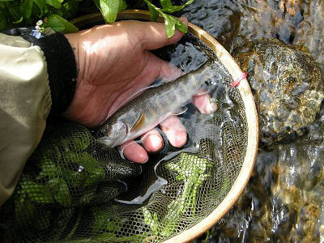
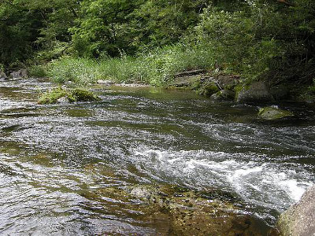
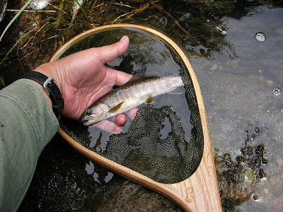

釣行日誌 故郷編
2009/7/24 ついにミノーを使い出す
「虹が出たぞ」
叔父が窓の外を指さす。本流に架かる大きな農道橋をさらにまたいで、完全な弧を描いた見事な虹がかかっている。これほど完璧な虹を見るのは日本では初めてのことである。
『これは幸先が良いな.....』
例によって、叔父と高原の川を目指して国道を一路北上する。昨日の今日というか、先週の今週というか、つまりは二人とも渓流のルアー釣りにハマっているのである。
犯罪者の一部には、犯行現場に舞い戻る者がいるそうだが、私達もそれと同じであろう。先週良い思いをした川に、また性懲りもなく出掛けて行く。
入漁券を買うために寄ったドライブインでは、和歌山ナンバーの釣り人が二人、ウェーディングシューズを履いているところであった。また、山岳渓流の橋詰めには、横浜ナンバーの車が停まっていた。
「この辺も本当に賑やかいね」
自分らのことは棚に上げて、我ながら勝手なことを言っている。
目的地の里川の合流点へ着くと、先週と水位はほぼ同じだが、水の色は澄んでおり、まずまずの水況である。見える範囲に先行者も居ない。先週釣り始めた堰堤の所に車を停め、今日は叔父と別々の区間を釣ろうか、ということになった。
「叔父さん、一人で釣って大丈夫？」
６年前に心臓発作で倒れ、血管を広げる手術をしている叔父を心配して尋ねると、
「ああ、案じゃぁ無い」
との答え。それじゃぁ、まぁいいか、と思い、二人で支度を始める。時刻は９時ちょうどだったので、私が堰堤から合流点までを釣り下り、叔父は合流点からさらに下流へ釣り下ることにして、12時に合流点で集合する約束をした。 「合流点から下は、川沿いに道路が無いから、川を歩いて戻って来にゃならんよ。大丈夫？」
「大丈夫だ」
小雨がパラパラしていたので、二人とも合羽を着た。先に支度を終え、叔父がロッドにラインを通すのを見ていると、
「さぁ、待っておらんでもいいで、先にやれ」
と言ってくれたので、忘れ物が無いことを確認して、叔父より先に堰堤わきの小径を川へ降りる。ところが小径は草ぼうぼうで、隠れていた用水路に足を取られ、下の草むらにドテンと転がり込んでしまった。はずみでトゲのある草をつかんでしまい、薬指から血が出ている。
『ありゃりゃ。こりゃしまった！』
血が出たわりには傷が浅かったので、かまわずに釣り始める。堰堤下の良ポイントが目についてしまい、これぐらいの傷は目に入らないのだ。（笑）
二段になった堰堤の、下流側の深みをブレットンで攻める。今日は買った時のトレブルフックを、大きめのバーブレスフックに交換してある。左岸から、そして川を渡って右岸から幾筋も流すが、何も反応は無い。先週良い型のアメノウオが出た沈石の陰でも反応が無い。
『こりゃ今日は水が澄みすぎていてダメかな....』
と思いつつ、堰堤直下の落ち込みを狙う。先週はここでは何も出なかったのだ。右岸のコンクリート壁ぎりぎりに、暗い淀みがあったので、スピナーを投げ込んで引っ張り出すとすぐに黒い影が出た。
「それっ！」
コツン、ブルブルッ、パラ～ん」
「あーっ！ 外れたぁー」
水面から引き抜いたところで岩魚が魚体をブルブルと振り、見事にフックを外して水に戻っていった。一日の最初の１尾を釣り損なうと、後はろくなことが無い。しかし気を取り直して、落ち込みを探り直す。左岸側の岸辺にも淀みがあったので、そこへ打ち込み、少し沈めてからリールを巻く。スピナーのブレードが回転する抵抗が伝わってくる。
「ゴツン！」
また来た！と思わず熱くなる。ラインの先が落ち込みの深みに刺さり、ぐねぐねとした抵抗が少しずつこちらに寄ってくる。
「えぃっ！」
ネットの柄に手がかかった所で水面の魚体が反転し、緊張があっけなく消散した。
「くっそー！ またバレたか！」
やはり市販のフックは使わずに、手間を惜しまずアゴの付いた丸セイゴ鉤にアイを作って改造しておくべきだったか、と、２尾連続のバラシに後悔しきりである。でもまァ、それほど大きな岩魚でもなかったし、ダメージ無くリリースできるからバーブレスフックも良いかな。と、良く言えば積極的思考、悪く言えばただの負け惜しみをつぶやきながら、下流へと進む。外れたのが30cm級であれば、こんなにオダヤカな心境では居られないであろう。
しばらく歩くと、開けた瀬の中に石が点在するポイントがあったので、しつこく流すと、茶色の影がブレットンを追いかけて来て、岸辺ぎりぎりで食い付いた。そのまま抜き上げると、型は小さいが、今日最初の１尾が釣れた。岩魚である。これでボウズは免れた。安堵のため息と共に魚をリリースし、さらに釣り下る。

岸辺から対岸へ蜘蛛の糸が張っているので、今朝は誰もこの区間を釣っていないと思われた。ようし！と意気込み、めぼしいポイントを狙う。
見込みのありそうな深みを流すと、気持ちの良いアタリと共に、水中を震えが走る。これもまぁリリースサイズだが、１尾は１尾である。
丁寧に釣り下ってくると、この区間は先週の区間に較べてポイントが多く、見込みがありそうなことがわかった。しかし、国道から近いので、入渓する人も多いと思われた。
急に雲間から７月の日差しが輝きだし、雨具を着込んだ体がムシムシと暑くなった。こりゃたまらんと急いで雨具を脱ぎ、丸めてベストの背中にしまい込む。シャツを通り抜ける風が心地良い。夏の岩魚釣りの快楽である。

苔むした石のある深みで、ゆっくりとスピナーを引いてくると、コツン！と手応えがあり、ロッドから心地よい緊張が伝わってくる。ネットを使うまでもないサイズだったので、思い切って水面から抜き上げると、さっきのよりは少々大きな岩魚だった。

丁寧にポイントを探りつつ釣り下り、ふと時計を見ると11時40分である。合流点まではまだ距離があるので、めぼしいポイントだけ釣って護岸の切れ目から農道へ上がる。国道に出て、合流点の橋まで行くと、対岸の空き地に叔父の車が停まっているのが見えた。時刻は12時ちょうど。対岸へ渡る農道の橋を渡っていると、下流から叔父がトコトコと歩いて来た。
「叔父さん、下流はどうだった？」
「爆釣、爆釣」
にこりと笑った叔父は、合流点のあたりをウロウロするだけで、八つ掛けて六つ釣り上げたという。型はまずまずだったらしい。こんなに人の多いところでたいしたものである。
「いやぁ、途中で合羽を脱いだ時に、老眼鏡を落としちゃってなぁ」
聞くと、叔父は合流点から私の釣った川を少し釣り上った所でポンポンと四つ釣り、陽が差してきたのでいったん車に戻って合羽を脱いだらしい。その時にメガネを落としたとのこと。
「メガネをあちこち一生懸命探して、きっと車のそばにあるだろうと思って、結局一時間近く探したあげくようやく見つけただ」
「そりゃぁ災難だったねぇ」
ということで、合流点あたりも魚影は濃いことがわかったので、先週釣りを終えた橋まで車で移動して、昼食をとることにした。さっきまでの日差しは幾分雲に隠れがちであったが、それでも蒸し暑い。車のドアを開け放して、昼のおにぎりを頬張る。腹ごしらえをして、第二ラウンドである。今度は、先週爆釣した区間を、釣り下ることにする。
わずかな流れ込みの深みのほかは、ダラダラの平瀬が続く区間を、私が先行してスピナーで探ってゆく。五回ほど引っ張ってアタリが無ければ今度は叔父がミノーを引く。すると、叔父のロッドがクイクイと曲がり、岩魚が身を震わせながら上がってくる。渓流釣りで何が悔しいといって、自分が一度攻めて釣れなかったポイントで、後から来た釣友が１尾釣り上げることほど悔しいことはない。
「すごいねぇ！ 叔父さん」
などと誉めてみるものの、内心は穏やかではない。スピナーとミノーの差かなぁ.....と自分を慰める。
小さな堰堤の所へ来たので、落ち込みを探ろうと身をかがめて近づいてゆき、いざキャスト！とブレットンをフックキーパーから外すと、突然ラインが切れて金属片が流れに飲み込まれる。
『あちゃー！』
常に結び目をチェックしておかないと、とんでもないところで思わぬ失敗をするところだった。失ったスピナーは痛かったが、大物が掛かった瞬間に切れなかったから良かったと、これも前向きに考える。叔父がミノーで釣るのなら、オレもやってみようかと、数日前に買ってきたドクターミノーの黒赤フローティングを結び、落ち込みの際の繁みに落とし込む。そのままラインをフリーで送り出し、下流の瀬尻まで流してからおもむろに引き始める。トレースする筋を変えて、二度三度、そして五回目を引き終わる。上流から叔父が降りてきて、同じポイントを引く。岩魚のヒット。
『くっそーっ！ ミノーの色の差だろう....』
ギリギリと奥歯を噛んで悔しがる私に、叔父がニカッと笑ってみせる。
「剛、お前はリーリングのスピードが速いんだ。もっとゆっくり引け」
いくら年季が違うとはいえ、これは悔しい。
次に現れた岸沿いの深みのボサぎりぎりを狙い、ミノーを投げ込む。対岸の繁みにかかってしまう直前にラインの出を人差し指で調整すると、ボサの5cm手前に着水する。後ろから見ていた叔父が、
「お前は投げるのは上手いなぁ」
と、少々引っ掛かる誉め方をしてくれる。これも悔しい。
先週ほどの爆釣ではないが、そこここで岩魚が出てくれ、遊んでくれる。相変わらず叔父は、私の後ろから来てロッドを曲げている。今日は二時間ほどで先週の区間を釣り終わり、堰堤まで来てしまった。左岸のけもの道を二人で這いずり上がり、車まで15分ほど歩いて戻る。車を停めた橋から上流を見てみると、下流と同じように平瀬が続き、あまり良い渓相ではない。
「後学のために上流を偵察してみるか？」
「うん、いいよ」
車に乗り込み、数百メートル移動すると、また一つ取水堰堤が見えた。ちょうど空き地もあったので、車を停め、川へ降りる。
「今度は俺が上をちょこっと探ってみるで、お前は下をやってみれ」
「うん、いいよ」
イノシシ避けの電気柵をまたいで乗り越える。ニュージーランドの牧場の電気柵が懐かしい。堰堤の上の深み、堰堤の落ち込み、その下の暗い大淵など、いろいろと攻めて見るが反応は無い。叔父はと言うと、早くも上流へ姿を消している。大淵は、この川にしては珍しく水深のある淵で、ここで出なけりゃダメだわなぁと思わせる第一級のポイントであった。教わったとおりにゆっくり、ゆっくりミノーを引いてくるが、ロッドティップが引き込まれることは無かった。
「ちょこっと」探ってくるという叔父の言葉を信じて、再び空き地に戻り、重いベストを脱いで休憩することにした。高原の村は静まりかえっており、峠越えの国道を、遠い所のナンバーを付けた乗用車がときおり通り過ぎるだけである。さっきまでの強い日差しは、梅雨の末期の不安定な雲に覆われて、日が陰っている。
手持ちぶさたで叔父を待っていると、はるか上流の川側のガードレールをよいしょっという感じでまたいで、餌釣りらしき風体のおじさん（人のことは言えない）が国道に姿を表した。
『なーんだ、あのおじさんが先行しておったんか。それで出ないわけだ...』
見るとは無しに見ていると、おじさんは今時珍しい太ももまでの長さのウェーダーを履き、ゆっくりゆっくりと私の方へ向かって歩いてくる。ふと、そのおじさんはガードレール越しに川の方へ目をやり、何かをじっと見ている。
『ははぁ、あの辺に豊叔父さんがいるんだな』
しばらくすると、餌釣りのおじさんは、見物をやめて私の方へ近づいてきた。挨拶をしないわけにもいかないので、
「こんにちは！ どうでしたか？」
と訊ねると、おじさんは
「いやぁ、小さいのばっかし.....」
力無く答えて、下流のバス停脇に停めてあった車に戻っていった。あまり元気のなさそうな釣り人だった。
叔父はといえば、まだ戻ってこない。川から道路へ上がるとすれば、さっき餌釣りのおじさんが現れたあたりの場所から出てくるはずなのだが.....と思って待っていたが、もう30分も経っているのに現れない。
『これは、もしかして.....』
よっぽど釣れているか、さもなくば心臓発作を起こして水辺に倒れ込んでいるかのどちらかであろう。さっきの餌釣りのおじさんが攻めた直後では、前者は無いだろうから、もしや後者か？と不安になり、再びベストを着込んで電気柵を乗り越え、叔父の入渓したポイントから探していくことにした。岸辺の草むらか、瀬尻のあたりに叔父の体が横たわっていたらどうしようかと心が暗くざわめく。
１．意識はあるか？ あればニトロの錠剤を口に入れる
２．呼吸はしているか？
３．呼吸が無ければ首を反らせてアゴを上げ、気道の確保
４．口腔内の清掃
５．人工呼吸を２回
６．心臓マッサージを15回、以後、人工呼吸と心臓マッサージの繰り返し
昔、子供たちをキャンプに連れて行く時に、消防署で習った応急手当の方法を思い出しながら川沿いを探す。心臓マッサージの時に圧迫する位置は胸のどのあたりだったろうか？ 果たしてこの場所は携帯電話の通話可能圏内にあるのだろうか？ だんだん冷たくなっていく叔父の胸の上で、汗まみれになって心臓マッサージを施す自分の姿が頭に浮かんだ。
両岸から柳の枝の被さった長いトロ場へ出ると、岸沿いの流れの中を歩いて上流へ行くか、いったん岸に上がって草むらの中を進むかの選択を迫られた。上流を見通した限り叔父の衣服は見えなかったので、草むらの中に倒れている可能性を考えて、ガサガサと草むらに踏み込んだ。何本かの柳を通り越したあたりでふと見上げると、叔父がスタスタと国道を歩いている。
『くっ！ 生きとるやんけ！』
心配かけてからに！と、ややイキドオリつつ、叔父を呼ぶ。
「叔父さーん！ 釣れたぁ？」
立ち止まった叔父は、林の中の私を見つけて、ガードレールに近寄り、
「剛、そこのポイントやってみろ！」
と、大声で答えた。相変わらずねちっこい釣りをするヒトだなぁ...と感心しつつ、長トロの上流端からフローティングミノーを下流へ投げ込む。ラインを送り出してルアーを柳の下の陰まで送り込んでいると、道路から叔父がミノーの流れている位置を見つけて、
「おお、その辺だ！」
と呼びかけてくる。『叔父さん遠目は効くなぁ』と感心しながらリトリーブを始める。プルプル、トウィッチを２回、ゆっくりとリーリング。しかし反応は無い。３度引っ張っても反応が無かったので、そのポイントはあきらめて国道に上がることにする。叔父も国道を上流側に戻ってくれて、どこで道路まで登ったらいいかを教えてくれた。長トロの少し上流に、小さな支流が流れ込んでいるポイントがあり、なかなか魅力的な淵ができている。
「ここで爆釣よ！ 25cm級を４尾！」
叔父が嬉しそうにそのポイントを指し示す。
「アップで２尾、ダウンで４尾掛けてなぁ、ふたつバラした」
景気の良い話である。支流のブロック積み護岸を、叔父の助けを借りてよじ登ると、叔父の独演会が始まった。
「いやぁ、釣れた釣れた。ほとんど入れ食いだったぞ。ここらの岩魚はルアーを見たこと無いんじゃないかな？」
「そりゃ良かったねぇ。俺も付いて行けば良かった。写真が撮れなくて残念だったなぁ」
「俺もカメラ持ってるけど、30cm以上でないと撮らないことにしてるんだ」
叔父の話はますます大きくなっていく。
「俺が４尾目を掛けて、グネグネとファイトしておる時に、ちょうど道の上からいい年の釣り人が見ておってなぁ。黙～って見ておったぞ。ああ気分良かった」
「ああ、そのおじさんと俺、しゃべったよ。元気なかったねぇ（笑）」
さっきまでの不安も吹っ飛んで、叔父の大本営発表を聞きつつ車に戻る。写真が撮れなかったのが本当に残念である。車に戻ると叔父が、
「まだ上流にもきっと魚は居るで、入りやすいところを探ってみるか？」
と、気を良くしてさらにやる気になっているので、こちらもその気になる。
上流にあった小橋から対岸へ渡り、流れを覗くともうこのあたりでは本当に細い流れになっている。けれど、餌釣りやフライの人が攻めあぐねそうなポイントがそこここにあるのがわかった。車を停め、ベストを着込んで岩組みの護岸を降りる。叔父は護岸の上からガイドをしてくれるようだ。
静かに河原を移動し、流れ込みの上流端に陣取る。下流側には、10mほどの荒瀬が続いている。何も障害物は無いので、オーバーヘッドで思い切り遠くへキャストする。派手な赤色のミノーが着水し、流れに乗って下ってゆく。そしてリーリング。
「ガツン！」
出るべくして出た。心地よい重さと震動がロッドから伝わってくる。もろに流れを利用してファイトしているので、とんでもない大物が掛かったように思われる。ミノーにはフックが２本付いているので安心して寄せてくると、護岸の隅に逃げ込もうと岩魚が本能的に抗う。ぐいぐいと引っ張り出し、手元で引っこ抜くと、23cmほどであった。
「釣れたぁ！」
「やったなぁ」
狙った通りの１尾で、非常に嬉しかった。さらに上流の深みを狙うと、20cmぐらいの岩魚に混じり、たくさんの稚魚がワラワラと現れてミノーを追って来る。放流するサイズよりは小さいと思われたので、ここら辺で自然繁殖してる岩魚だろうと思った。
さらに農道を上流へ走ってみたが、別の沢が合流するところで流れが小さくなりすぎたので、今日はここで納竿することにした。車からマットを出して腰を下ろし、濡れたウェーダーを脱ぐ。
「いやぁ、クィックィッと引いてきて、ガツンと来た瞬間は忘れられんねぇ」
「ガツンと来て、パラ～んと外れた時の、あの虚脱感も忘れられんぞ」
高原の村の片隅で、今日も釣りの自慢話が始まった。
釣行日誌 故郷編 目次へ
サイトマップ
ホームへ
お問い合わせ